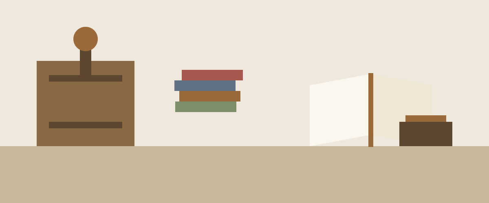

Herbier de 1890
Restauration complète, consolidation des planches, reliure demi-cuir.
Camille Roux
Je répare, relie et habille les livres depuis douze ans, dans un atelier du quartier Saint-Cyprien à Toulouse.

Restauration complète, consolidation des planches, reliure demi-cuir.
Douze carnets cousus main, papier vergé, couvertures en papier marbré.
Reprise du dos, nouvelles gardes, dorure au fer sur le plat.
L'atelier est ouvert du mardi au vendredi, sur rendez-vous.
14 rue des Amidonniers, 31000 Toulouse